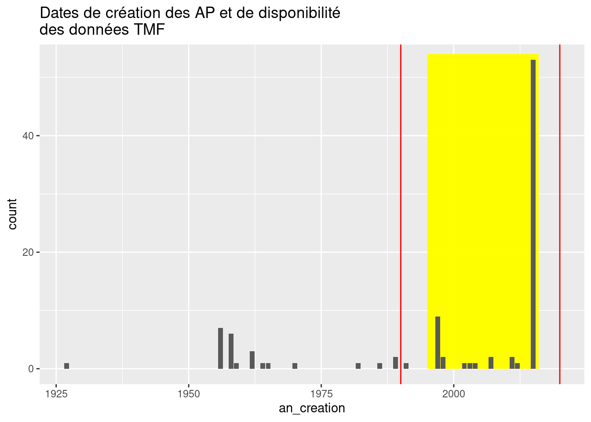

On va comparer pour chaque AP les taux de déforestation entre les années qui précèdent la création de l’aire protégée et les années qui suivent la création. Les données utilisées sont celles de TMF, pour lesqueles on dispoe d’un historique allant de 1990 à 2020. On va donc se concentrer sur les aires protégées dont la création est survenue entre ces dates, en prenant un peu de marge pour avoir des données avant et après.
Pour rappel, on représente ici les dates de création des aires protégées.
Code
library(tidyverse)library(lubridate)library(sf)library(gt)# On reprend les données telles que préparées au chapitre 3load("data/ch3_AP_Vahatra.rds")AP_Vahatra %>%mutate(an_creation =year(date_creation)) %>%select(nom, an_creation) %>%ggplot(aes(x = an_creation)) +geom_rect(xmin =1995, xmax =2016, ymin =0, ymax =54, fill ="yellow", alpha =0.3) +geom_bar() +xlim(c(NA, 2020)) +geom_vline(xintercept =c(1990, 2020), col ="red") +ylim(NA, 53) +ggtitle("Dates de création des AP et de disponibilité\ndes données TMF")

Afin de disposer de suffisamment d’historique avant et après la création des AP, on va sélectionner celles créées à partir de 1995 et jusqu’en 2015 (plage en jaune ci-dessus). Cela correspond à 72 aires protégées sur les 98 que contenaient la base Vahatra. Pour ces aires protégées, on va normaliser les dates pour les exprimées non plus en année calendaires (2002, 2003, 2004…), Mais en années par rapport à la date de création de l’aire protégée (-3, -2, -1, 0, 1, 2…).
Code
# Une fonction pour créer un jeu avec des dates normaliséesans_vs_crea <-function(x, vars_commenct_par ="TMFdeg_HA",ans_marge =5) { avant_apres_abs <- AP_Vahatra %>%st_drop_geometry() %>%select(nom, date_creation, starts_with(vars_commenct_par)) %>%filter(year(date_creation) >=1995&year(date_creation) <=2017) %>%pivot_longer(cols =starts_with("TMF"),names_to ="variable",values_to ="valeur") %>%mutate(an_valeur =str_extract(variable, "[:digit:]{4}"),an_valeur =as.numeric(an_valeur),an_creation =year(date_creation),an_val_crea = an_valeur - an_creation,sequence_crea =ifelse(an_val_crea <0, "Avant",ifelse(an_val_crea >0, "Après", "Création"))) %>%filter(an_val_crea >= ans_marge *-1& an_val_crea <= ans_marge & an_val_crea !=0) %>%mutate(sequence_crea =factor(sequence_crea, levels =c("Avant", "Après")))}# Un jeu avec les dégradations 5 ans avant et 5 ans après## en valeur absoluedeg_avap_abs <-ans_vs_crea(AP_Vahatra, vars_commenct_par ="TMFdeg_HA",ans_marge =5)## en valeur relative (ratio)deg_avap_rel <-ans_vs_crea(AP_Vahatra, vars_commenct_par ="TMFdeg_ratio",ans_marge =5)moy_deg_avap_abs <- deg_avap_abs %>%group_by(sequence_crea) %>%summarise(`Moyenne sur 5 ans`=mean(valeur, na.rm =TRUE)) %>%mutate(Indicateur ="Surface en valeur absolue (ha)")moy_deg_avap_rel <- deg_avap_rel %>%group_by(sequence_crea) %>%summarise(`Moyenne sur 5 ans`=mean(valeur, na.rm =TRUE)*100) %>%mutate(Indicateur ="Surface en valeur relative (%)")moy_deg_avap <-bind_rows(moy_deg_avap_abs, moy_deg_avap_rel) %>%mutate(`Moyenne sur 5 ans`=round(`Moyenne sur 5 ans`, 2)) %>%pivot_wider(names_from = sequence_crea, values_from =`Moyenne sur 5 ans`) gt(moy_deg_avap) %>%tab_header(title ="Moyenne de dégradation annuelle sur 5 ans") %>%tab_source_note(c("Source : TMF, Carvalho et al. 2018 et association Vahatra.","Calculs des auteurs."))
Moyenne de dégradation annuelle sur 5 ans
Indicateur
Avant
Après
Surface en valeur absolue (ha)
178.35
264.25
Surface en valeur relative (%)
0.49
0.74
Source : TMF, Carvalho et al. 2018 et association Vahatra.
Calculs des auteurs.
D’après ces éléments, il semble que la déforestation augmente dans les aires protégées après l’instauration de la protection.
On peut aussi visualiser cette information sur les 10 plus grandes aires.
Code
# A compléter.
On va maintenant réaliser quelques tests statistiques pour analyser la significativité de ces différeces.